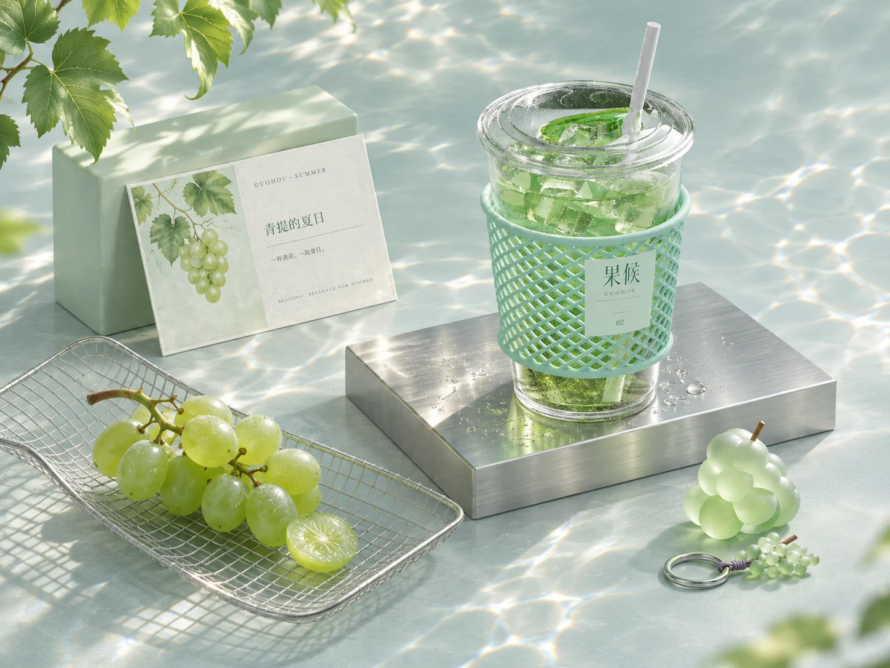
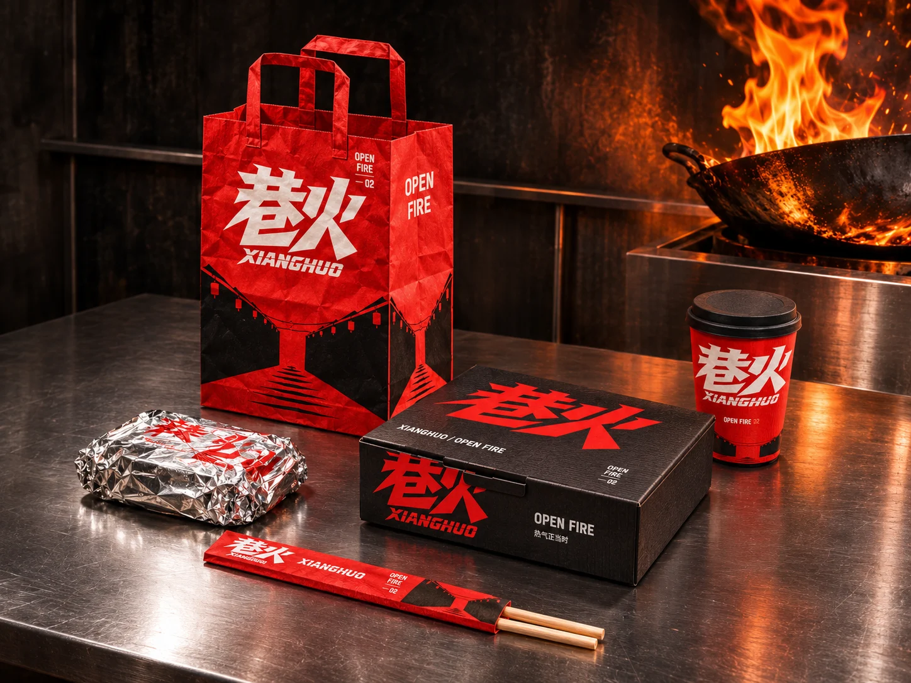

Identity, objects & everyday lifeBrand
Brand
studies.
从品牌语言到生活场景。三套进行中的视觉系统，探索色彩、材质、包装与人与物的关系。
自主概念设计与既有品牌视觉延展 / AI 辅助制作

果候 ↗
四季饮品 / Seasonal drinks

巷火 ↗
街巷餐饮 / Open fire

桃生活 ↗
疗愈中心 / Care & connection
从品牌语言到生活场景。三套进行中的视觉系统，探索色彩、材质、包装与人与物的关系。
自主概念设计与既有品牌视觉延展 / AI 辅助制作

四季饮品 / Seasonal drinks

街巷餐饮 / Open fire
疗愈中心 / Care & connection